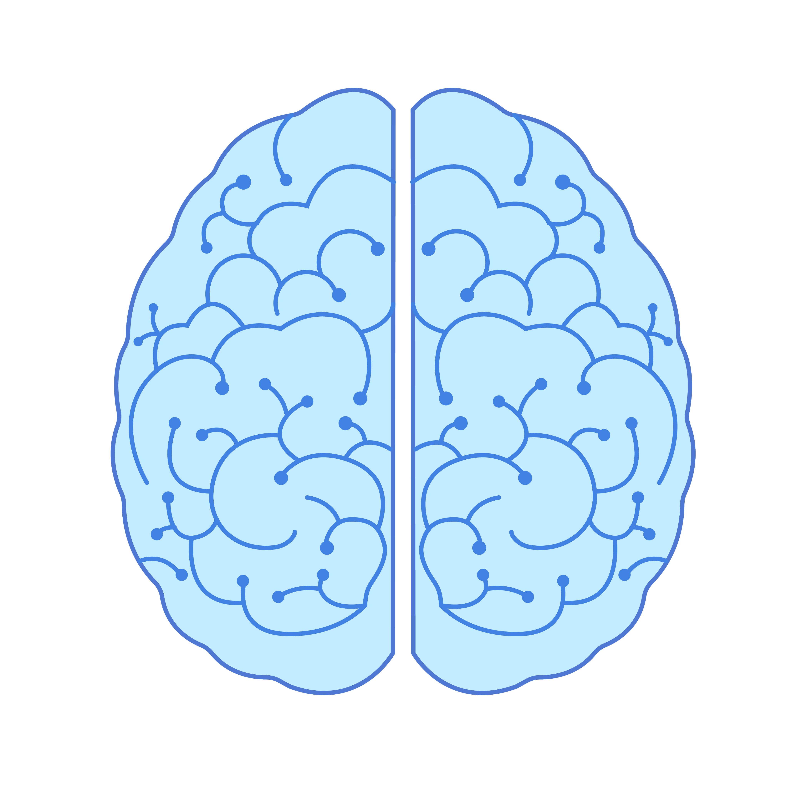

<div class="brain-wrapper" [ngClass]="{'image-revealed': isShowBrain}" >
    <div class="brain-image">
        
      </div>
</div>
<div class="details">
    <div
    ngbTooltip="Click me!" tooltipClass="summary"
    class="line-with-dot"></div>
</div>